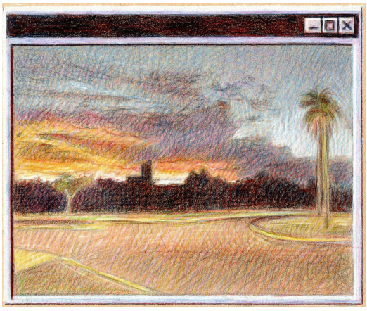
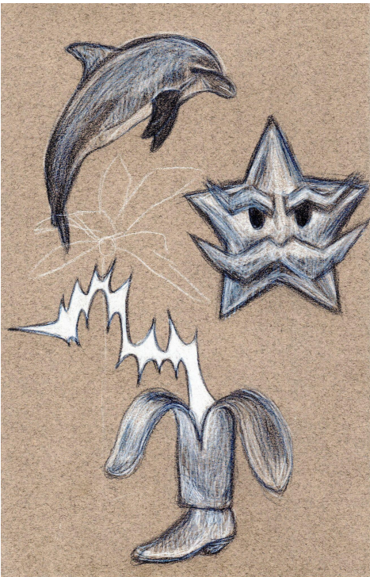
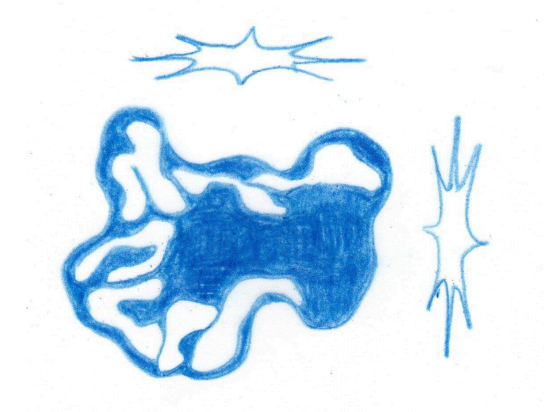
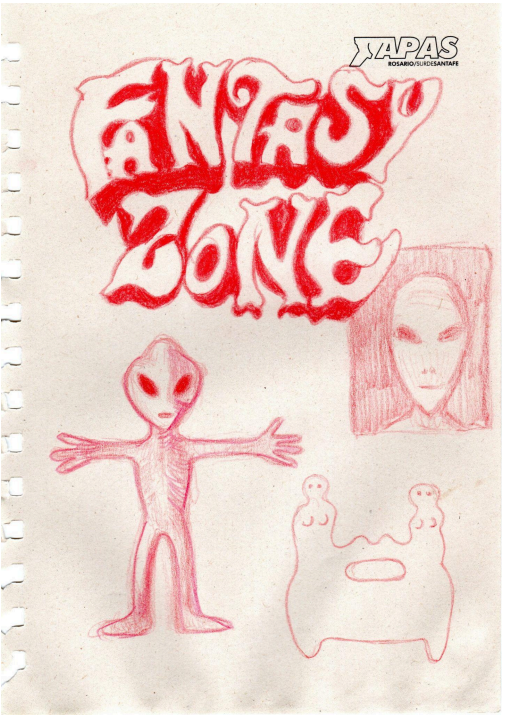

Sin título, 2010. Tiza pastel y cigarrillos sobre papel. 60 x 48 cm

Obra 2, 2012. Collage sobre cartón. 50 x 40 cm

Obra 3, 2015. Mixta sobre tela. 100 x 100 cm

Obra 3, 2015. Mixta sobre tela. 100 x 100 cm

Obra 3, 2015. Mixta sobre tela. 100 x 100 cm

Obra 3, 2015. Mixta sobre tela. 100 x 100 cm

Obra 3, 2015. Mixta sobre tela. 100 x 100 cm

Obra 3, 2015. Mixta sobre tela. 100 x 100 cm

Obra 3, 2015. Mixta sobre tela. 100 x 100 cm
Gabriel Fernández (Rosario, 1988) – Vive y trabajo en la ciudad de Rosario. Se dedica a la docencia, al dibujo y a la crítica de arte
Estudio Licenciatura en Bellas Artes con orientación en Teoría y Crítica en la Universidad Nacional de Rosario.
Entre 2013 a 2018 asistio al taller de dibujo Un Triángulo y una Calavera coordinado por Pauline Fondevila y Silvia Lenardón.
Participo de diversas muestras siendo estas últimas:
2023 Chasquido, Crudo Arte Contemporáneo, Rosario.
2021 Una de esas tardes... 97°Salón Anual Nacional de Santa Fe, Rosa Galisteo de
Rodriguez, Santa Fe.
2018 Corazones Solitarios curada por Pauline Fondevila, Espacio Fundación OSDE.
Rosario.
2017 Black Horse/ White Horse Mal de Archivo y Bon Scott Bar, Rosario.
2016 Modelo para Desviar: homenaje a Öyvind Fahlström. CEC, Centro de Expresiones
Contemporáneas, Rosario.
2016 Ejercicios. Formación, aprendizaje e intercambios en el arte contemporáneo.
MACRO Museo de Arte Contemporáneo, Rosario
2015 Escudos La Toma Galería de Arte, Rosario.
2014 Fantasías y Homenajes: Artistas jóvenes de Rosario. Alianza Francesa, Rosario.
Descargar CV (pdf)